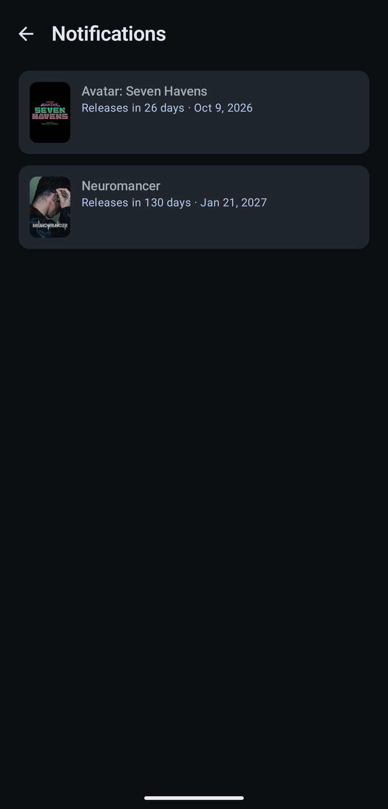
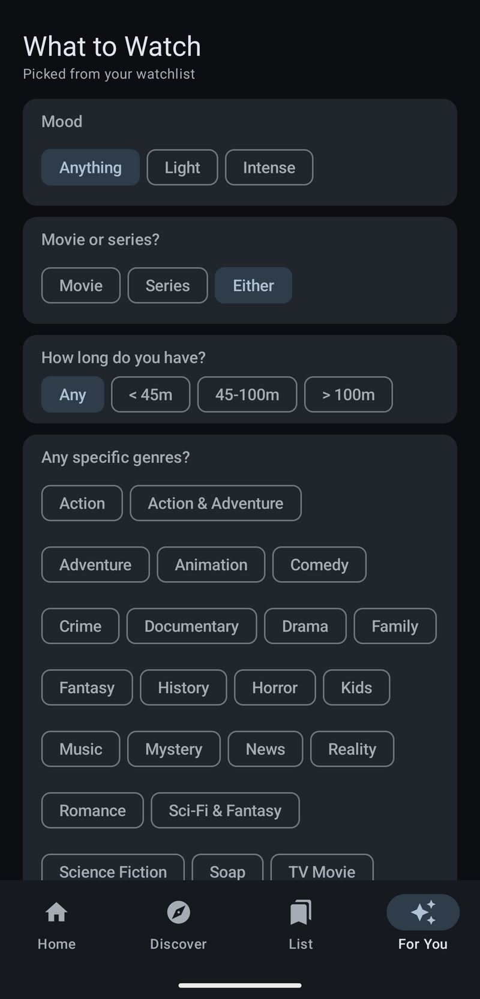
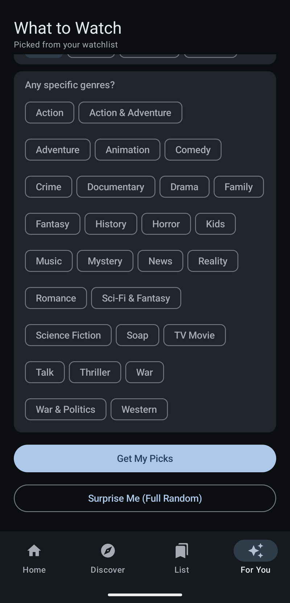
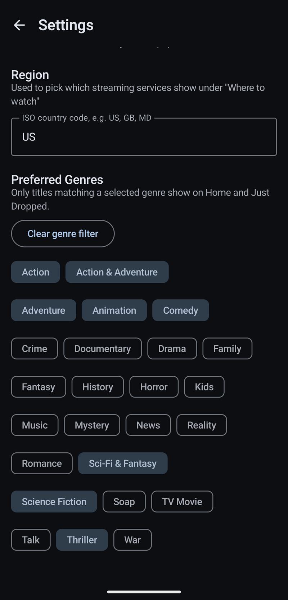
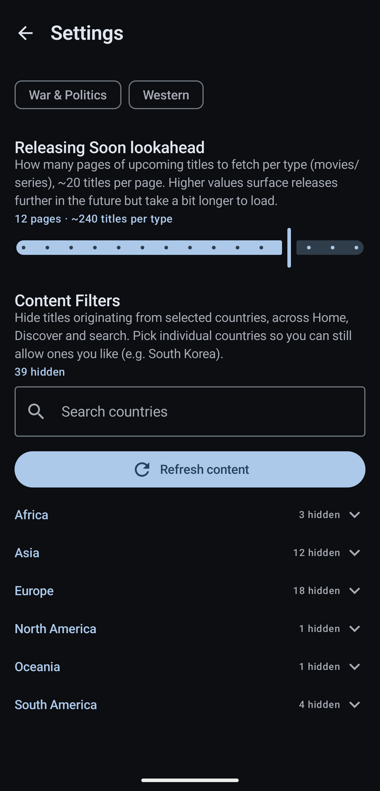

Show Tracker
One list for everything I'm watching — movies and series together, what's releasing soon, what just dropped, and a quick picker for when I can't decide.
KotlinJetpack ComposeMaterial 3RoomHiltRetrofit + MoshiWorkManagerTMDBOMDb
One list for everything I'm watching — movies and series together, what's releasing soon, what just dropped, and a quick picker for when I can't decide.
The idea is simple: I wanted one overview of what's coming and what just landed, a way to set a reminder for a specific title instead of hoping I'd remember it, and a search that lets me add anything — movie or series — to a single watchlist. From there, a quick picker takes the decision-fatigue part off my hands: give it a mood, a runtime window, a genre or two, and it either draws from what's already on the list or hands back something fully random.
This is also a different starting point from the other two apps here. FitApp and Subscription Tracker both began in Python — Kivy first, one later rebuilt in Kotlin once the concept had proven itself. Show Tracker skipped that step and went straight to native Kotlin and Jetpack Compose, since by this point the Kotlin/Compose toolchain from the Subscription Tracker rebase was already familiar. The whole build lives entirely online — no Android Studio, no local Gradle, no offline machine involved at any point. Every commit goes straight to GitHub, and GitHub Actions does the rest, the same reproducible-build instinct that had Subscription Tracker's Kivy version building inside Docker.
The workflow itself is a small YAML file under .github/workflows/, triggered on every push to main. It checks out the repo, sets up a JDK via actions/setup-java, restores the Gradle cache, then runs ./gradlew assembleDebug — GitHub's own runner does the actual compiling, so no toolchain has to exist on my machine at all. The last step hands the resulting APK to actions/upload-artifact, which attaches it to that workflow run. Once the run finishes, the APK shows up as a zipped download on the run's summary page in the Actions tab — grab it, unzip, install. Nothing gets published to a store, so this manual pull is the whole distribution path for now.
Metadata comes from two APIs stitched together: TMDB for search, trending titles, synopses, cast, posters, and region-aware "where to watch" data, and OMDb — queried by IMDb ID — for the IMDb rating and Rotten Tomatoes score TMDB doesn't carry itself. Neither IMDb nor Rotten Tomatoes exposes a public API of their own, so this pairing is the practical ceiling on what a hobby project can pull in without scraping — see below for where that shows.
Home surfaces two rails: upcoming titles with a bell to arm a notification, and what's newly out with a one-tap add to the watchlist — both filtered by preferred genres and country when those are set.
Discover searches movies and series together against TMDB. Anything found gets handpicked onto one list, which then doubles as a simple watch log — checked off once seen, deleted once done.
For You runs a short quiz — mood, movie or series, runtime, specific genres — then either pulls a match from the watchlist or, with Surprise Me, ignores all of it for a fully random pick.
No local alarms — a WorkManager job re-checks TMDB for every watchlisted title still marked upcoming roughly twice a day, and fires a notification the moment its status flips to released.
Settings holds preferred genres (used to filter Home and Just Dropped), a region code for which streaming services show under "where to watch," and per-country content filters to hide titles from countries you'd rather not see, with exceptions.
Both APIs are rate-limited and occasionally miss a title entirely, especially smaller or very recent releases. OMDb's IMDb/Rotten Tomatoes lookup depends on TMDB having a matching IMDb ID in the first place, so a handful of titles show ratings as unavailable rather than wrong.
Notifications currently track a title as a whole, not a season — so a series already marked released doesn't get a second alert when a new season lands. Doing that properly means tracking season-level release dates per watchlisted series rather than one release flag per title, which is the next piece to design in rather than bolt on.




